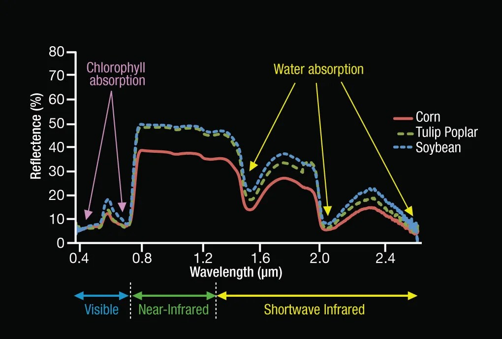
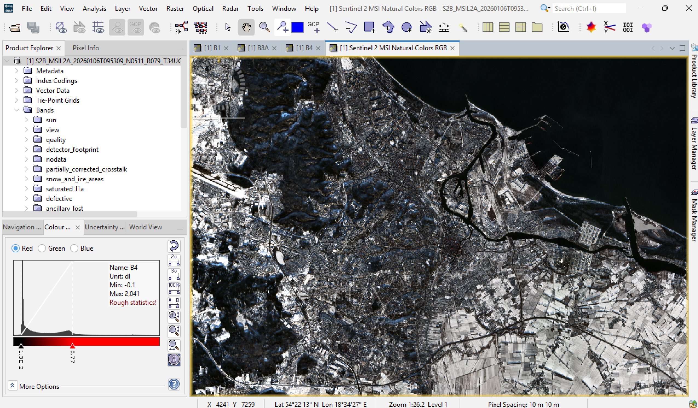

2 Week 1: What is Remote Sensing?
2.1 Summary
In week 1 we were introduced to the basic concepts of Remote Sensing which I’ll cover briefly below.
To start with some definitions:
Remote sensing is the collection of data about the Earth from the atmosphere with various technologies that utilise electromagnetic (EM) waves.
Electromagnetic waves are sources of EM energy used in remote sensing can come from sources like the Sun, or sensors such as LiDAR sending out their own light and then measuring the the return time for the light pulses to identify information about the surface of the Earth.
2.2 Electromagnetic Waves
The electromagnetic spectrum is essentially the energy that makes remote sensing work.
All matter that is above absolute zero temperatures (-273.15°C) radiates EM energy due to molecules moving against one another, and there are several complex processes which can change how much EM energy is radiated, such as temperature. Essentially all natural objects receive and re-emit energy, and we can measure and use this data to identify the material the light is reflecting off of such as vegetation.

Source: Wikipedia
2.2.1 Active and Passive Sensors

Passive sensing refers to using an external source of EM energy to operate. Commonly the EM energy emitted by the Sun is used to measure the reflection and absorption of light by objects and this data is collected by Satellites which produce images of the Earth.
For passive sensors it is important to remember that weather such as clouds or particles in the atmosphere can interfere with the EM energy and cause scattering which can interfere with the image produced. One example of this is Rayleigh scattering where nitrogen and oxygen particles in the air interact with the Sun’s emitted EM waves to create the sunset effect.
Ways in which this can be corrected will be expanded upon in Week 3.
Active sensors rely on a source of EM to emit and receive electromagnetic waves and measure the backscatter of said wave. For example LiDAR emits rapid laser pulses to collect information about the object or surface based on the return time of the laser pulse.
As such active sensors such as Synthetic Aperture Radar (SAR) sends electromagnetic waves that are not on the light spectrum to the Earth which are not interfered with by clouds or atmospheric particles allowing the sensor to capture information at night.
We can also think about it in simpler terms, the cameras that exist on our mobile phones are light sensors, allowing us to take images of the environment around us without necessarily making physical contact with it.
2.2.2 Resolutions
There are 4 resolutions in remote sensed imagery.
| Resolution | Definition | Use |
|---|---|---|
| Spatial | The size of each pixel in an image corresponds to an area of the Earth’s surface, e.g. one pixel can correspond to as little as a few centimetres (high resolution) to 10km. | Images of the Earth can be used to detect objects such as buildings. A high spatial resolution allows us to see more detail. |
| Spectral | Senors which can distinguish between more closely spaced waves are said to measure more Bands of imagery i.e. more wavelengths. | A high spectral resolution allows us to identify particular types of minerals, vegetation or other features because each object has a unique spectral signature. |
| Temporal | The time it takes for a satellite to make an orbit and end at the same observation area. Satellites can have orbits as short as 1 day, or much longer. | Allows us to see change over time for a particular area of observation. |
| Radiometric | Information in each pixel of the image, measured by the number of bits. A 4-bit image indicates there are 16 digital values (grayscale shades) in an image. The more bits the more subtle information can be discerned from the image. | Can create really detailed images when being able to detect very slight differences in energy, can detect very subtle changes in environments or land use. |
2.3 Spectral signatures
Different surfaces such as concrete or grassland will reflect EM waves in different ways, creating unique ‘signatures’ that help us identify the type of surface. These signatures reflect various characteristics such as differences between dry and moist ground.
For example vegetation tends to absorb visible light (blue and red light specifically used for photosynthesis) and reflects near-infrared energy which can be captured and summarised in a chart. The health of vegetation can be measured in this way as unhealthy plants with less chlorophyll will reflect differently to healthy plants.

2.4 Applications
2.4.1 Open Source Data - Sentinel and Landsat
This week we started working with some open satellite data from the Sentinel and Landsat satellites. Sentinel satellites are run by the Copernicus Programme at the European Space Agency and provide high spatial resolution imagery, 10m, 20, and 60m per pixel resolution depending on the Band used.
The Landsat program started by NASA and the US Geological Survey in 1972 has provided imagery across the world. The latest operational Landsat satellites are Landsat 8 and 9 providing 15m, 30m and 100m resolution depending on the Band used.
2.4.2 SNAP Case study: Gdansk
During the practical I used SNAP to interact with Sentinel satellite imagery for the Polish city of Gdansk, learning how to render these in true colour (RGB) and extract statistics from the data such as the nature of vegetation, e.g. whether the soil is wet or dry.

2.4.3 Scatter plot
I started the practical by looking at recent satellite imagery of Gdansk in January 2026 where large snowfall was reflected in the scatter plot I produced. In order to compute this using the near-infrared and green light that plant matter reflects I had to understand the RGB bands used to produce the scatter plot from B4 - B8. In the image for Gdansk and the surrounding areas we can see a lot of wet bare soil which makes sense.

The scatter plot above shows the Band 4 (x axis) and Band 8 (y axis), which are the red and near-infrared bands, so here the lower values of Band 8 and Band 4 are indicating wet bare soil which makes sense given the winter period.
2.4.4 Tasseled Cap Transformation
The Tasseled Cap Transformation is a method used to analyse the spectral data from multiple bands into a standardised image which incorporates information about surface brightness, vegetation greenness and moisture content.
To start this process I managed to clip the city boundaries for my raster image importing a shapefile into SNAP and masking it.

I struggled with following the practical and computing the brightness, greenness and wetness bands in SNAP but managed to produce an image attempting to represent the Tasseled Cap function which is a part of Principal Component analysis. Perhaps due to the presence of snow the result is being distorted somehow, but more likely that I computed this image wrong.
Brightness is associated with bare soil or manmade surfaces helping to identify urban areas. Greeness is associated with green vegetation and wetness with moisture. The green pictured below is correctly identifying the large forest area in the northwest of the clipped boundary. In general there is a lot of vegetation across the city and we cannot see any water bodies as the sea has been clipped out.
What is displayed in pink usually shows man-made surface like concrete and generally reflects built up areas. This accurately reflects the airport in the west of the map, and areas of the city centre, but I would have expected to see more of this around the city centre and it is picking up some bare soil fields in the eastern part of the map.

To check this further I computed a false composite image using Bands B8, B4 and B3 to check how the near-infrared reflecting plant matter shows up. This does largely match the PCA tasseled cap transformation above with the greenness and the near-infrared reflection captured in red matching well. However I assume due to the presence of snow around the fields in the eastern part of the map is mostly bare soil which is why it appears pink in the PCA and white in the false composite image.

Unfortunately I was unable to compute the selected points of interest using SNAP as it simply took too long to export into a GeoTiff file. I did not manage to complete the R portion of this practical but I hope that in future weeks I can manage to do this.
However, from the practical using the Cape Town example I can see how plotting the spectral values for various land cover areas can combine several spectral signatures to showcase distinctions between areas of forest or grass. The applications of this in areas of environmental monitoring, or urban planning e.g. looking at spectral signatures of certain chemicals in the atmosphere or in water could help expose illegal polluting activity.

Despite not being able to compute the points of interest for Gdansk, working with SNAP helped me understand how multispectral sensors the Bands they use can be manipulated to produce interesting images to get a better interpretation of the vegetation and urban areas across the city.
Ultimately, I think using data from January wasn’t a great choice given the impact of snow but it definitely made me realise just how much goes into selecting appropriate satellite imagery given that atmospheric events like clouds, fog, snow can alter the usefulness of the images.
2.5 Reflections
Although it was somewhat difficult to work with SNAP this week I have really enjoyed working with new types of data and getting to understand how remote sensing works.
I spent some time reading ahead for the upcoming weeks and was really interested to discover that both multispectral and SAR imagery can be combined to extract information about the natural and urban environments across the world. I found the visual explanation of how this can be done from (Schulte to Bühne and Pettorelli 2018) to be a good introduction and I enjoyed reading about the various examples of environmental monitoring. One of these was outlined by (Ban 2003) exploring how to classify crops such as wheat and corn under good and bad growth conditions to demonstrate how combining Landsat data with SAR gave them the most accurate classification of crop health. I can imagine how valuable this data is during unprecedented weather events that can exacerbate food shortages in vulnerable regions.
Personally, working at a Local Council I would be interested to read more about the urban applications of these techniques for monitoring smaller areas of vegetation such as urban farms, or looking at the impact to infrastructure under extreme weather events. Combined with studies of how environmental changes impact citizens and their health outcomes would provide an insightful avenue for using satellite data alongside geodemographic data. However, I can also imagine there are obstacles to getting high spectral and spatial resolution imagery due to costs, and the technical requirements to process really detailed spectral signatures.